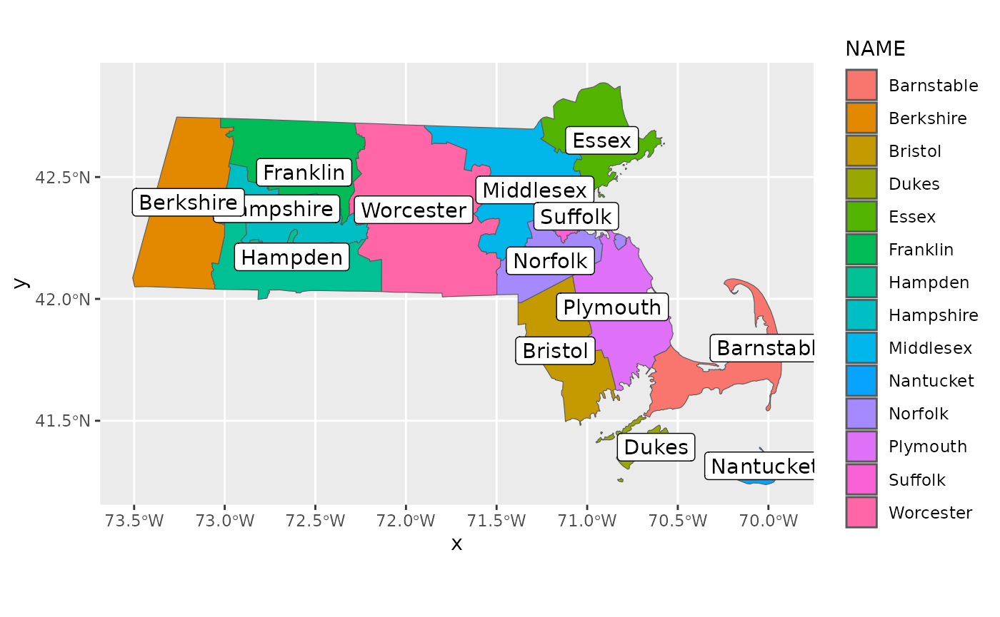

03: Understanding and Preparing Your Adjacency Structure
RSTr-adj.RmdOverview
The adjacency structure is a set of instructions that show the
spatial relationship between each region and informs RSTr
which counties to pull information from when spatially smoothing. In
this vignette, we will cover the requirements for the
adjacency object along with walking through the setup of
the adjacency information.
Requirements
Adjacency information is input as a list
adj where each element adj[[i]] is a vector of
indices denoting regions that are neighbors of region i.
Below, we will walk through the construction of the adjacency
information and address common issues that may arise.
Example: Massachusetts Map Data
For this example, we will continue using Massachusetts data as we did
in section 2. Included is an example dataset that contains Massachusetts
shapefile information, generated using the tigris
package:
library(RSTr)
head(mamap)
#> STATEFP COUNTYFP COUNTYNS AFFGEOID GEOID NAME NAMELSAD
#> 15 25 017 00606935 0500000US25017 25017 Middlesex Middlesex County
#> 31 25 005 00606929 0500000US25005 25005 Bristol Bristol County
#> 32 25 015 00606934 0500000US25015 25015 Hampshire Hampshire County
#> 46 25 025 00606939 0500000US25025 25025 Suffolk Suffolk County
#> 320 25 023 00606938 0500000US25023 25023 Plymouth Plymouth County
#> 356 25 027 00606940 0500000US25027 25027 Worcester Worcester County
#> STUSPS STATE_NAME LSAD ALAND AWATER
#> 15 MA Massachusetts 06 2118256715 75315911
#> 31 MA Massachusetts 06 1432553805 357457333
#> 32 MA Massachusetts 06 1365533877 46623894
#> 46 MA Massachusetts 06 150875411 160499488
#> 320 MA Massachusetts 06 1705521260 1126101572
#> 356 MA Massachusetts 06 3912618040 177370899
#> geometry
#> 15 -71.89877, -71.82380, -71.80539, -71.77256, -71.74582, -71.72686, -71.70139, -71.67239, -71.65187, -71.63621, -71.63181, -71.63062, -71.61979, -71.56731, -71.54269, -71.54254, -71.49568, -71.48810, -71.48804, -71.46755, -71.45769, -71.45171, -71.44917, -71.43235, -71.43234, -71.38819, -71.38694, -71.36973, -71.36743, -71.36519, -71.35187, -71.35180, -71.35162, -71.33033, -71.33021, -71.31349, -71.31345, -71.29421, -71.28883, -71.27893, -71.27852, -71.27541, -71.26790, -71.26637, -71.25561, -71.25520, -71.25515, -71.25124, -71.24791, -71.24594, -71.24427, -71.23843, -71.23818, -71.24040, -71.24249, -71.24417, -71.25011, -71.25172, -71.25497, -71.25619, -71.23906, -71.22926, -71.19895, -71.17621, -71.17600, -71.17176, -71.17296, -71.17612, -71.17839, -71.17749, -71.18202, -71.18135, -71.16488, -71.16391, -71.16067, -71.15952, -71.15862, -71.15656, -71.15442, -71.14865, -71.14594, -71.14320, -71.14120, -71.13546, -71.12136, -71.11100, -71.08937, -71.07617, -71.05877, -71.05935, -71.05742, -71.03400, -71.02831, -71.03098, -71.03546, -71.03666, -71.03766, -71.04010, -71.04153, -71.04428, -71.04468, -71.04975, -71.05187, -71.05272, -71.05301, -71.05720, -71.06494, -71.07098, -71.07515, -71.06757, -71.06698, -71.06585, -71.06196, -71.06067, -71.05838, -71.05751, -71.04098, -71.03860, -71.04091, -71.04099, -71.04011, -71.03830, -71.03948, -71.03656, -71.03663, -71.03695, -71.03490, -71.03584, -71.03872, -71.04223, -71.04377, -71.04209, -71.04032, -71.03991, -71.04186, -71.04521, -71.04695, -71.05025, -71.05263, -71.05421, -71.05336, -71.04778, -71.04695, -71.04159, -71.03997, -71.02757, -71.02584, -71.02500, -71.02038, -71.02101, -71.02135, -71.02300, -71.02304, -71.02409, -71.02823, -71.02932, -71.03109, -71.03173, -71.03257, -71.03318, -71.03344, -71.03491, -71.03710, -71.03774, -71.03907, -71.04089, -71.04615, -71.04616, -71.04815, -71.05195, -71.05330, -71.05000, -71.05070, -71.05530, -71.05552, -71.06570, -71.07090, -71.07070, -71.06700, -71.06737, -71.07270, -71.07350, -71.07740, -71.07764, -71.07873, -71.07943, -71.08093, -71.08070, -71.07566, -71.07269, -71.07247, -71.07054, -71.06712, -71.06406, -71.06948, -71.07058, -71.07064, -71.07154, -71.07479, -71.07566, -71.07571, -71.07609, -71.07733, -71.07795, -71.08518, -71.09100, -71.09403, -71.09789, -71.10303, -71.10432, -71.11036, -71.11059, -71.11320, -71.11685, -71.11716, -71.11668, -71.11660, -71.11670, -71.11694, -71.11692, -71.11723, -71.11844, -71.12248, -71.12320, -71.12820, -71.13100, -71.13318, -71.13176, -71.13237, -71.13666, -71.13989, -71.14367, -71.14449, -71.14717, -71.14833, -71.15448, -71.15975, -71.16151, -71.16389, -71.16763, -71.16947, -71.17139, -71.17394, -71.17480, -71.17427, -71.17000, -71.16670, -71.16674, -71.16894, -71.16889, -71.16756, -71.16273, -71.16092, -71.15704, -71.16460, -71.16735, -71.16922, -71.17048, -71.17172, -71.17372, -71.17893, -71.16980, -71.16642, -71.16470, -71.16981, -71.17864, -71.19090, -71.19125, -71.19089, -71.19264, -71.19527, -71.19579, -71.19673, -71.20159, -71.20297, -71.20524, -71.20635, -71.20788, -71.21156, -71.21125, -71.21129, -71.21327, -71.21819, -71.22051, -71.22411, -71.22669, -71.22631, -71.22707, -71.22629, -71.22754, -71.22804, -71.22826, -71.23091, -71.23442, -71.23842, -71.24079, -71.24615, -71.24680, -71.24919, -71.25294, -71.25629, -71.25847, -71.25900, -71.26309, -71.26569, -71.26996, -71.28137, -71.29179, -71.30598, -71.31721, -71.32733, -71.32975, -71.32640, -71.32635, -71.32366, -71.32166, -71.32154, -71.30846, -71.30583, -71.30292, -71.33250, -71.33243, -71.32944, -71.32977, -71.33088, -71.33119, -71.32970, -71.33173, -71.33358, -71.33675, -71.34101, -71.34166, -71.34309, -71.34097, -71.33862, -71.33850, -71.33995, -71.34681, -71.34832, -71.34998, -71.35148, -71.35216, -71.35070, -71.34654, -71.34682, -71.34417, -71.36199, -71.37839, -71.38477, -71.40443, -71.40314, -71.40229, -71.42355, -71.42373, -71.42662, -71.43017, -71.44407, -71.46401, -71.47274, -71.47812, -71.47810, -71.47803, -71.49314, -71.49738, -71.50263, -71.50689, -71.52322, -71.53589, -71.53928, -71.55574, -71.55507, -71.55645, -71.55582, -71.55678, -71.57227, -71.57155, -71.57823, -71.58291, -71.58922, -71.60222, -71.59932, -71.59287, -71.58986, -71.58676, -71.57797, -71.56456, -71.55853, -71.55850, -71.55658, -71.55241, -71.55012, -71.54795, -71.54462, -71.54169, -71.53963, -71.53801, -71.53394, -71.53226, -71.52800, -71.52493, -71.52238, -71.52218, -71.51822, -71.51388, -71.51054, -71.51023, -71.50898, -71.50648, -71.50593, -71.50588, -71.49957, -71.49901, -71.49705, -71.49318, -71.48990, -71.48595, -71.48511, -71.48674, -71.48680, -71.50822, -71.51124, -71.51653, -71.53188, -71.53732, -71.55113, -71.56909, -71.57031, -71.57825, -71.58521, -71.59250, -71.59736, -71.60188, -71.60527, -71.60359, -71.60396, -71.60410, -71.61153, -71.61826, -71.62066, -71.62583, -71.62470, -71.61001, -71.60307, -71.60776, -71.58794, -71.58015, -71.60254, -71.60425, -71.60263, -71.58526, -71.57909, -71.56458, -71.55910, -71.55070, -71.54890, -71.54339, -71.56037, -71.55069, -71.53485, -71.53272, -71.52984, -71.53138, -71.53376, -71.53878, -71.55602, -71.57541, -71.57794, -71.58029, -71.58856, -71.59112, -71.59301, -71.59319, -71.59462, -71.60229, -71.60785, -71.61993, -71.62110, -71.62513, -71.62847, -71.63202, -71.63401, -71.63589, -71.63643, -71.63665, -71.63921, -71.63894, -71.63587, -71.66533, -71.67574, -71.67897, -71.67769, -71.67190, -71.66803, -71.66460, -71.69416, -71.70134, -71.73226, -71.77576, -71.77532, -71.79419, -71.84484, -71.85848, -71.85681, -71.85639, -71.85776, -71.86375, -71.86575, -71.86978, -71.87745, -71.89710, -71.89877, 42.71142, 42.70940, 42.70890, 42.70801, 42.70729, 42.70687, 42.70631, 42.70568, 42.70523, 42.70489, 42.70479, 42.70476, 42.70450, 42.70326, 42.70268, 42.70267, 42.70156, 42.70138, 42.70138, 42.70090, 42.70066, 42.70052, 42.70046, 42.70006, 42.70006, 42.69901, 42.69899, 42.69858, 42.69852, 42.69847, 42.69815, 42.69815, 42.69814, 42.69720, 42.69719, 42.69710, 42.69710, 42.69699, 42.70201, 42.71126, 42.71180, 42.71593, 42.72589, 42.72720, 42.73639, 42.73664, 42.73655, 42.72122, 42.70812, 42.70031, 42.69375, 42.67076, 42.66942, 42.66673, 42.66235, 42.66151, 42.66099, 42.66033, 42.65778, 42.65714, 42.64892, 42.64421, 42.62965, 42.61872, 42.61862, 42.61655, 42.61501, 42.61461, 42.61080, 42.60896, 42.60843, 42.60837, 42.59802, 42.60185, 42.60532, 42.60766, 42.61295, 42.61498, 42.61527, 42.61317, 42.60833, 42.60404, 42.60321, 42.59912, 42.60028, 42.60116, 42.60301, 42.60414, 42.60908, 42.60633, 42.60474, 42.58549, 42.57408, 42.57265, 42.57026, 42.57165, 42.57116, 42.57159, 42.57349, 42.57388, 42.57295, 42.57109, 42.57211, 42.57165, 42.57299, 42.57396, 42.56212, 42.55589, 42.53104, 42.52468, 42.52474, 42.52483, 42.52430, 42.52523, 42.52362, 42.52417, 42.52626, 42.52396, 42.52172, 42.51985, 42.51724, 42.51626, 42.51454, 42.51244, 42.51177, 42.51042, 42.50676, 42.50519, 42.50272, 42.50234, 42.50120, 42.49827, 42.49671, 42.49595, 42.49329, 42.48872, 42.48796, 42.48653, 42.48606, 42.47690, 42.47592, 42.46959, 42.46865, 42.46258, 42.46073, 42.44668, 42.44471, 42.44371, 42.43825, 42.43712, 42.43650, 42.43352, 42.43346, 42.43158, 42.42420, 42.42188, 42.41878, 42.41739, 42.41553, 42.41421, 42.41338, 42.41088, 42.40731, 42.40632, 42.40426, 42.40175, 42.39804, 42.39804, 42.39663, 42.39762, 42.39618, 42.39347, 42.39200, 42.38710, 42.38712, 42.38660, 42.38900, 42.38960, 42.39401, 42.39530, 42.39080, 42.39180, 42.38617, 42.38584, 42.38431, 42.38332, 42.38213, 42.38104, 42.38020, 42.37322, 42.37266, 42.37236, 42.37182, 42.36900, 42.36905, 42.36801, 42.36795, 42.36711, 42.36377, 42.36161, 42.36146, 42.36038, 42.35908, 42.35874, 42.35633, 42.35440, 42.35372, 42.35312, 42.35251, 42.35240, 42.35259, 42.35262, 42.35311, 42.35538, 42.35700, 42.35874, 42.35918, 42.36125, 42.36368, 42.36425, 42.36737, 42.36862, 42.36876, 42.36894, 42.37357, 42.37389, 42.37234, 42.36986, 42.36889, 42.36675, 42.36444, 42.36508, 42.36482, 42.36175, 42.36112, 42.36004, 42.35978, 42.35897, 42.35852, 42.36007, 42.35805, 42.35609, 42.35340, 42.35027, 42.34958, 42.34425, 42.34001, 42.33985, 42.33845, 42.33583, 42.33344, 42.33396, 42.33364, 42.33039, 42.32463, 42.32264, 42.32199, 42.32154, 42.31949, 42.31805, 42.31432, 42.30761, 42.30475, 42.30383, 42.30044, 42.29460, 42.28325, 42.28299, 42.28582, 42.28775, 42.28796, 42.28620, 42.28608, 42.28863, 42.28857, 42.28957, 42.29427, 42.29716, 42.29973, 42.30227, 42.30311, 42.30616, 42.30680, 42.30641, 42.30730, 42.30825, 42.31028, 42.31240, 42.31412, 42.31540, 42.31684, 42.31885, 42.32073, 42.32081, 42.32179, 42.32090, 42.32101, 42.32106, 42.32364, 42.32676, 42.32466, 42.32530, 42.32634, 42.32605, 42.32724, 42.32809, 42.32523, 42.32260, 42.31907, 42.31626, 42.31375, 42.31299, 42.30440, 42.30429, 42.29742, 42.29389, 42.29369, 42.27071, 42.26008, 42.24827, 42.24907, 42.24773, 42.24530, 42.24259, 42.24047, 42.23759, 42.23333, 42.23144, 42.23040, 42.22749, 42.22447, 42.22192, 42.22019, 42.21811, 42.21689, 42.21523, 42.21387, 42.21559, 42.21489, 42.21395, 42.21155, 42.20737, 42.20578, 42.20464, 42.20356, 42.20070, 42.19576, 42.19347, 42.19201, 42.18843, 42.18261, 42.17879, 42.17813, 42.17925, 42.17931, 42.17939, 42.17489, 42.15820, 42.15687, 42.15678, 42.15866, 42.16587, 42.16621, 42.16664, 42.19142, 42.18893, 42.18933, 42.18965, 42.18973, 42.18250, 42.18448, 42.18661, 42.18984, 42.19245, 42.19273, 42.19465, 42.19520, 42.19556, 42.20291, 42.21810, 42.22596, 42.24321, 42.25126, 42.25955, 42.26244, 42.26687, 42.26782, 42.26754, 42.26813, 42.26743, 42.26602, 42.26594, 42.26448, 42.26397, 42.26279, 42.26456, 42.26527, 42.26611, 42.26653, 42.26590, 42.26644, 42.26645, 42.26772, 42.26758, 42.26623, 42.26552, 42.26449, 42.26428, 42.26658, 42.27294, 42.28499, 42.28606, 42.28983, 42.29728, 42.30365, 42.31123, 42.32316, 42.32994, 42.33019, 42.32793, 42.32881, 42.33034, 42.32859, 42.32797, 42.32639, 42.32037, 42.31966, 42.31502, 42.31095, 42.31790, 42.32102, 42.32697, 42.33016, 42.33168, 42.33534, 42.33677, 42.33899, 42.34259, 42.34525, 42.34972, 42.35046, 42.35740, 42.36727, 42.37002, 42.38219, 42.38700, 42.39694, 42.39770, 42.39850, 42.40710, 42.40824, 42.41093, 42.41194, 42.44107, 42.44731, 42.46645, 42.47435, 42.48914, 42.51333, 42.51465, 42.51984, 42.52035, 42.52765, 42.54303, 42.54612, 42.54959, 42.55005, 42.55047, 42.54630, 42.54450, 42.54389, 42.54383, 42.54338, 42.54520, 42.54538, 42.55250, 42.55193, 42.55010, 42.54800, 42.54452, 42.54088, 42.54000, 42.53437, 42.53313, 42.53096, 42.52878, 42.52402, 42.52840, 42.52995, 42.53043, 42.53941, 42.57140, 42.59272, 42.61160, 42.62027, 42.62238, 42.63145, 42.64423, 42.63666, 42.63703, 42.63799, 42.63381, 42.66084, 42.66764, 42.67498, 42.67955, 42.68411, 42.68365, 42.68929, 42.70373, 42.71142
#> 31 -70.83595, -70.83358, -70.83122, -70.83204, -70.82373, -70.82092, -70.82171, -70.82191, -70.83009, -70.83845, -70.83595, 41.60252, 41.60225, 41.60198, 41.60650, 41.59857, 41.58767, 41.58383, 41.58284, 41.58539, 41.59646, 41.60252, -71.38170, -71.38170, -71.38170, -71.38170, -71.38170, -71.38170, -71.38170, -71.38160, -71.38148, -71.38146, -71.38146, -71.38140, -71.38150, -71.38149, -71.38147, -71.38147, -71.36434, -71.34282, -71.33880, -71.32693, -71.30362, -71.28826, -71.27016, -71.25873, -71.25686, -71.24236, -71.23543, -71.22389, -71.21158, -71.20850, -71.19263, -71.17846, -71.16868, -71.14226, -71.13861, -71.11286, -71.09837, -71.09328, -71.08048, -71.07876, -71.07607, -71.07421, -71.07120, -71.06960, -71.06387, -71.05472, -71.05418, -71.04978, -71.04949, -71.04263, -71.02105, -71.01659, -71.01057, -70.99977, -70.99963, -70.99675, -70.99553, -70.99645, -70.99722, -70.99740, -70.99713, -70.99508, -70.99328, -70.99198, -70.99115, -70.99315, -70.99185, -70.98726, -70.97716, -70.97717, -70.97372, -70.97831, -70.98274, -70.98578, -70.98804, -70.99045, -70.99590, -71.00745, -71.01094, -71.03657, -71.03631, -71.02316, -71.01459, -71.02629, -70.98796, -70.96065, -70.92178, -70.90718, -70.90444, -70.88644, -70.87064, -70.86500, -70.85821, -70.85214, -70.84804, -70.84524, -70.84318, -70.84417, -70.85252, -70.85965, -70.85964, -70.85520, -70.85513, -70.85453, -70.85426, -70.85443, -70.85367, -70.84964, -70.84798, -70.84323, -70.84204, -70.84234, -70.84655, -70.84865, -70.85018, -70.85104, -70.85178, -70.85300, -70.85345, -70.85672, -70.85724, -70.86024, -70.86366, -70.86364, -70.86295, -70.86874, -70.86890, -70.86836, -70.86962, -70.87266, -70.87465, -70.87773, -70.87904, -70.88201, -70.88206, -70.88442, -70.88706, -70.88921, -70.88926, -70.89082, -70.89457, -70.89638, -70.90312, -70.90582, -70.90883, -70.90886, -70.91320, -70.91170, -70.90983, -70.90717, -70.90537, -70.90452, -70.90331, -70.89966, -70.89956, -70.89861, -70.90205, -70.90908, -70.91081, -70.91234, -70.91658, -70.91705, -70.91841, -70.92007, -70.92177, -70.92238, -70.92269, -70.92564, -70.93046, -70.92972, -70.93029, -70.93059, -70.93105, -70.93117, -70.93000, -70.92739, -70.92782, -70.92813, -70.93130, -70.93133, -70.93134, -70.93372, -70.93798, -70.94159, -70.94443, -70.94691, -70.94808, -70.94880, -70.94730, -70.93783, -70.93543, -70.93532, -70.93483, -70.93456, -70.92852, -70.94178, -70.94630, -70.94793, -70.95488, -70.95262, -70.95330, -70.95660, -70.95803, -70.96135, -70.96658, -70.97229, -70.97662, -70.98013, -70.98465, -70.98156, -70.98171, -70.98396, -70.99389, -71.00328, -71.01935, -71.02225, -71.02234, -71.03551, -71.03835, -71.03361, -71.03551, -71.03836, -71.04121, -71.04120, -71.04108, -71.04101, -71.04859, -71.05842, -71.06877, -71.07069, -71.08566, -71.08655, -71.09305, -71.10681, -71.11380, -71.11578, -71.12057, -71.12240, -71.12660, -71.12762, -71.13131, -71.13149, -71.13162, -71.13749, -71.13855, -71.14059, -71.14087, -71.14091, -71.14151, -71.14047, -71.13569, -71.13568, -71.13470, -71.13448, -71.13448, -71.13267, -71.13289, -71.13469, -71.13519, -71.14587, -71.15359, -71.15399, -71.16215, -71.17609, -71.17609, -71.17609, -71.17599, -71.18129, -71.18433, -71.18433, -71.19118, -71.19118, -71.19439, -71.19564, -71.19569, -71.20122, -71.20829, -71.20837, -71.22247, -71.22480, -71.22579, -71.22624, -71.24525, -71.24533, -71.25213, -71.25474, -71.26139, -71.28440, -71.29476, -71.29769, -71.31639, -71.31780, -71.31792, -71.32790, -71.32940, -71.32930, -71.33012, -71.33220, -71.33390, -71.33580, -71.33930, -71.34070, -71.34080, -71.34017, -71.33930, -71.33930, -71.33927, -71.33890, -71.33900, -71.33902, -71.33920, -71.34720, -71.34589, -71.34490, -71.34284, -71.33960, -71.33760, -71.33750, -71.33520, -71.34080, -71.34180, -71.34220, -71.34167, -71.33449, -71.33400, -71.33741, -71.33783, -71.33783, -71.33886, -71.34080, -71.33972, -71.33972, -71.33930, -71.33930, -71.33918, -71.33870, -71.33876, -71.33976, -71.34587, -71.34905, -71.35270, -71.35452, -71.35470, -71.36250, -71.36470, -71.36540, -71.37100, -71.37119, -71.37380, -71.37635, -71.37650, -71.37660, -71.38153, -71.38170, -71.38170, 41.89375, 41.89706, 41.90360, 41.91466, 41.91482, 41.91558, 41.92270, 41.92290, 41.94777, 41.95286, 41.95286, 41.96480, 41.96670, 41.97140, 41.98271, 41.98508, 41.98529, 41.99355, 41.99509, 41.99965, 42.00858, 42.01446, 42.02154, 42.02600, 42.02673, 42.03240, 42.03511, 42.03962, 42.04443, 42.04563, 42.05183, 42.05736, 42.06116, 42.07136, 42.07278, 42.08286, 42.08853, 42.09053, 42.09554, 42.08827, 42.07695, 42.06912, 42.05646, 42.04970, 42.02480, 41.98506, 41.98272, 41.96431, 41.96309, 41.95952, 41.94641, 41.94387, 41.94008, 41.92967, 41.92847, 41.92737, 41.92505, 41.92379, 41.92311, 41.91840, 41.91668, 41.91497, 41.91647, 41.91560, 41.90913, 41.90644, 41.90608, 41.90581, 41.87515, 41.87470, 41.86088, 41.85725, 41.85541, 41.85406, 41.85181, 41.85007, 41.84702, 41.83848, 41.83586, 41.81652, 41.81632, 41.80618, 41.79957, 41.77889, 41.78341, 41.78665, 41.79124, 41.76354, 41.75800, 41.76023, 41.71596, 41.70016, 41.68117, 41.66392, 41.65246, 41.64467, 41.62849, 41.62898, 41.62692, 41.62412, 41.62412, 41.62187, 41.62183, 41.61961, 41.61859, 41.61601, 41.61397, 41.61025, 41.60296, 41.59656, 41.59354, 41.59364, 41.59497, 41.59414, 41.59353, 41.59029, 41.58750, 41.58363, 41.58219, 41.58371, 41.58770, 41.59463, 41.59759, 41.60092, 41.60385, 41.61436, 41.61466, 41.62266, 41.62561, 41.62782, 41.62843, 41.62937, 41.62978, 41.63069, 41.63071, 41.63143, 41.63224, 41.63290, 41.63277, 41.62851, 41.62411, 41.62400, 41.62358, 41.62358, 41.62358, 41.62354, 41.61927, 41.61772, 41.61581, 41.61308, 41.61123, 41.61036, 41.60672, 41.59582, 41.59550, 41.59265, 41.59158, 41.59370, 41.59551, 41.59867, 41.60748, 41.60793, 41.60923, 41.61081, 41.61341, 41.61434, 41.61430, 41.61391, 41.61327, 41.60948, 41.60845, 41.60792, 41.60709, 41.60687, 41.60044, 41.59406, 41.59300, 41.59222, 41.58430, 41.58423, 41.58420, 41.58029, 41.57742, 41.58103, 41.58106, 41.58109, 41.57982, 41.57904, 41.57366, 41.56524, 41.55567, 41.55476, 41.55084, 41.54875, 41.53978, 41.54012, 41.53756, 41.52980, 41.52757, 41.51812, 41.51501, 41.51546, 41.52169, 41.52970, 41.53166, 41.53077, 41.52900, 41.52756, 41.52045, 41.51368, 41.51007, 41.50890, 41.51126, 41.51191, 41.50886, 41.50447, 41.50435, 41.49905, 41.49218, 41.48680, 41.48164, 41.48110, 41.49054, 41.49091, 41.49533, 41.49753, 41.50266, 41.50597, 41.50842, 41.50888, 41.50929, 41.50868, 41.50421, 41.50247, 41.50011, 41.49651, 41.49745, 41.52216, 41.55518, 41.56323, 41.59231, 41.59325, 41.59392, 41.60256, 41.60343, 41.60510, 41.60710, 41.60740, 41.61608, 41.62389, 41.62840, 41.62853, 41.63889, 41.64120, 41.64126, 41.65874, 41.66010, 41.66050, 41.66050, 41.66280, 41.66404, 41.66410, 41.66558, 41.66810, 41.66850, 41.66860, 41.67140, 41.67250, 41.67305, 41.67305, 41.67429, 41.67422, 41.67480, 41.67509, 41.67510, 41.68186, 41.69050, 41.69060, 41.70768, 41.71050, 41.71170, 41.71221, 41.73389, 41.73399, 41.74174, 41.74472, 41.75230, 41.76201, 41.76638, 41.76762, 41.77551, 41.77610, 41.77616, 41.78050, 41.78260, 41.78680, 41.78836, 41.79230, 41.79450, 41.79480, 41.79630, 41.79830, 41.80020, 41.80195, 41.80440, 41.80650, 41.80661, 41.80830, 41.80855, 41.80859, 41.80900, 41.82310, 41.82589, 41.82800, 41.82955, 41.83200, 41.83370, 41.83377, 41.83550, 41.84246, 41.84370, 41.84480, 41.84592, 41.86124, 41.86230, 41.87199, 41.87317, 41.87317, 41.87611, 41.88160, 41.89009, 41.89011, 41.89340, 41.89360, 41.89456, 41.89840, 41.89839, 41.89827, 41.89753, 41.89714, 41.89670, 41.89652, 41.89650, 41.89560, 41.89540, 41.89530, 41.89460, 41.89459, 41.89440, 41.89403, 41.89401, 41.89400, 41.89323, 41.89320, 41.89375
#> 32 -73.06577, -73.01168, -73.00908, -72.99264, -72.98813, -72.98647, -72.97928, -72.96858, -72.97904, -72.97541, -72.87685, -72.87666, -72.87546, -72.87032, -72.87516, -72.87114, -72.85563, -72.83157, -72.83149, -72.80990, -72.77333, -72.77360, -72.76379, -72.76430, -72.75829, -72.75911, -72.76511, -72.76594, -72.75711, -72.75776, -72.70088, -72.70424, -72.70439, -72.66914, -72.62909, -72.62232, -72.58558, -72.58114, -72.58110, -72.57592, -72.54420, -72.54049, -72.53097, -72.48989, -72.48398, -72.48370, -72.37502, -72.37538, -72.37197, -72.37354, -72.36992, -72.37141, -72.36997, -72.36658, -72.36799, -72.36936, -72.36791, -72.36883, -72.36713, -72.36772, -72.36670, -72.36550, -72.36596, -72.36371, -72.36683, -72.36584, -72.36372, -72.36581, -72.36669, -72.36614, -72.36419, -72.36372, -72.36399, -72.36276, -72.36082, -72.36077, -72.35803, -72.35636, -72.35732, -72.35926, -72.35724, -72.35899, -72.35897, -72.35719, -72.35795, -72.35646, -72.35841, -72.35803, -72.35938, -72.35656, -72.35503, -72.35540, -72.35406, -72.35288, -72.35350, -72.35120, -72.35252, -72.35253, -72.35113, -72.35359, -72.35118, -72.35430, -72.35300, -72.35523, -72.35456, -72.35610, -72.35733, -72.35903, -72.35873, -72.36048, -72.36063, -72.35721, -72.35602, -72.35421, -72.35189, -72.35169, -72.35037, -72.34956, -72.35066, -72.35228, -72.34989, -72.35146, -72.35016, -72.34866, -72.34589, -72.34360, -72.34209, -72.33770, -72.33525, -72.33472, -72.33230, -72.32912, -72.32833, -72.32722, -72.32740, -72.32822, -72.32676, -72.32621, -72.32467, -72.32604, -72.32487, -72.32272, -72.32317, -72.31775, -72.31478, -72.31492, -72.31425, -72.31218, -72.30941, -72.30879, -72.30680, -72.30614, -72.30375, -72.30140, -72.29874, -72.29671, -72.29539, -72.29133, -72.28856, -72.28423, -72.28138, -72.27849, -72.27708, -72.28000, -72.27464, -72.26865, -72.26192, -72.26154, -72.24454, -72.23293, -72.21080, -72.21214, -72.21285, -72.21307, -72.21223, -72.21277, -72.21626, -72.21675, -72.21397, -72.21080, -72.20328, -72.20396, -72.20711, -72.21204, -72.21278, -72.21765, -72.21757, -72.21651, -72.21609, -72.21110, -72.21108, -72.21046, -72.21458, -72.21482, -72.21807, -72.22122, -72.24701, -72.24975, -72.25761, -72.26823, -72.27055, -72.27144, -72.27377, -72.27767, -72.28130, -72.29157, -72.29449, -72.33388, -72.33597, -72.33632, -72.34168, -72.34321, -72.34619, -72.34554, -72.34655, -72.34739, -72.34931, -72.35037, -72.35232, -72.35371, -72.35502, -72.35734, -72.35904, -72.36148, -72.36329, -72.36199, -72.36467, -72.36498, -72.36460, -72.36348, -72.36265, -72.36385, -72.36353, -72.36100, -72.35986, -72.35938, -72.36128, -72.36167, -72.36016, -72.35822, -72.36077, -72.39548, -72.40292, -72.40395, -72.44712, -72.47834, -72.49806, -72.52429, -72.54126, -72.54636, -72.57220, -72.59345, -72.59580, -72.59617, -72.60380, -72.60793, -72.61075, -72.61163, -72.61356, -72.61513, -72.62246, -72.62319, -72.62366, -72.62403, -72.62134, -72.61801, -72.61507, -72.61155, -72.60778, -72.60023, -72.59917, -72.59882, -72.59936, -72.60038, -72.60121, -72.60523, -72.60995, -72.61201, -72.61314, -72.63459, -72.65184, -72.65654, -72.66777, -72.67003, -72.69052, -72.68624, -72.68686, -72.70339, -72.72610, -72.76656, -72.78104, -72.78211, -72.79199, -72.79329, -72.79341, -72.81258, -72.81342, -72.85667, -72.85763, -72.86428, -72.86847, -72.87218, -72.91230, -72.89457, -72.88118, -72.88060, -72.88521, -72.89479, -72.89564, -72.95327, -72.95382, -73.00028, -73.00191, -73.00219, -73.00333, -73.00371, -73.00581, -73.00535, -73.00661, -73.01025, -73.01274, -73.01433, -73.01686, -73.01824, -73.02015, -73.02207, -73.02507, -73.02614, -73.02940, -73.03128, -73.03416, -73.03613, -73.03895, -73.03963, -73.04075, -73.04545, -73.04667, -73.04902, -73.05266, -73.05677, -73.06289, -73.06429, -73.06851, -73.06577, 42.38911, 42.37968, 42.38773, 42.44909, 42.46695, 42.46671, 42.49786, 42.54001, 42.54162, 42.55604, 42.54120, 42.53173, 42.52590, 42.52515, 42.50725, 42.48404, 42.48092, 42.47638, 42.47700, 42.47321, 42.46678, 42.46554, 42.46366, 42.46016, 42.46093, 42.45649, 42.45588, 42.45168, 42.45241, 42.44588, 42.45292, 42.40748, 42.40555, 42.40971, 42.41431, 42.41511, 42.42314, 42.42258, 42.42258, 42.42326, 42.42715, 42.42763, 42.42885, 42.43382, 42.40872, 42.40748, 42.42082, 42.41901, 42.41597, 42.41339, 42.41074, 42.40861, 42.40803, 42.40351, 42.40266, 42.40028, 42.39754, 42.39644, 42.39458, 42.39407, 42.39112, 42.39063, 42.38876, 42.38699, 42.38535, 42.38295, 42.38182, 42.38175, 42.38075, 42.37824, 42.37882, 42.37644, 42.37364, 42.37204, 42.37121, 42.36877, 42.36680, 42.36651, 42.36501, 42.36391, 42.35970, 42.35670, 42.35564, 42.35430, 42.35309, 42.35062, 42.34993, 42.34791, 42.34557, 42.34323, 42.34271, 42.34068, 42.34009, 42.33817, 42.33758, 42.33442, 42.33244, 42.33114, 42.32956, 42.32769, 42.32488, 42.32368, 42.32125, 42.31820, 42.31605, 42.31351, 42.31039, 42.30976, 42.30882, 42.30870, 42.30765, 42.30490, 42.30328, 42.30568, 42.30641, 42.30426, 42.30417, 42.30603, 42.30739, 42.30794, 42.30804, 42.30999, 42.31031, 42.30918, 42.30997, 42.31189, 42.31433, 42.31454, 42.31514, 42.31762, 42.31941, 42.31969, 42.31856, 42.32047, 42.32348, 42.32525, 42.32681, 42.32516, 42.32677, 42.32805, 42.33082, 42.33104, 42.33352, 42.33949, 42.33978, 42.34264, 42.34369, 42.34280, 42.34376, 42.34489, 42.34428, 42.34613, 42.34576, 42.34823, 42.34932, 42.34937, 42.35057, 42.35174, 42.35208, 42.35201, 42.33613, 42.33646, 42.32941, 42.32909, 42.30196, 42.30352, 42.30526, 42.30333, 42.30603, 42.30788, 42.31138, 42.31022, 42.30757, 42.30381, 42.30257, 42.30151, 42.29931, 42.29406, 42.29426, 42.29448, 42.29118, 42.28888, 42.28525, 42.28265, 42.26980, 42.27017, 42.26820, 42.25965, 42.25620, 42.25568, 42.25126, 42.24721, 42.24757, 42.24904, 42.24860, 42.24525, 42.24209, 42.23902, 42.22987, 42.22931, 42.23713, 42.23637, 42.23585, 42.23310, 42.23502, 42.23222, 42.23143, 42.22072, 42.22016, 42.21954, 42.21923, 42.21865, 42.21598, 42.21316, 42.21079, 42.21014, 42.21021, 42.20853, 42.20701, 42.20701, 42.20885, 42.20900, 42.20651, 42.20542, 42.20603, 42.20733, 42.20726, 42.20669, 42.20315, 42.20204, 42.19852, 42.19796, 42.19702, 42.19726, 42.19632, 42.19425, 42.19463, 42.19349, 42.19015, 42.18980, 42.18952, 42.18574, 42.22628, 42.23185, 42.22725, 42.22381, 42.22163, 42.21873, 42.21699, 42.21649, 42.21380, 42.21156, 42.21180, 42.21179, 42.21387, 42.21623, 42.21942, 42.22277, 42.22558, 42.22681, 42.23021, 42.23091, 42.23166, 42.23536, 42.24182, 42.24837, 42.25201, 42.25691, 42.26058, 42.26539, 42.26738, 42.26990, 42.27534, 42.27739, 42.28126, 42.28446, 42.28522, 42.28557, 42.28627, 42.27394, 42.23764, 42.22774, 42.22546, 42.21650, 42.21308, 42.18883, 42.18339, 42.18628, 42.19021, 42.19723, 42.19975, 42.21727, 42.21730, 42.23527, 42.23685, 42.23495, 42.24500, 42.24058, 42.24048, 42.23227, 42.22366, 42.21644, 42.23913, 42.25381, 42.26490, 42.26538, 42.33261, 42.33149, 42.34070, 42.34383, 42.34386, 42.31260, 42.31179, 42.31024, 42.30978, 42.30773, 42.30647, 42.30520, 42.30479, 42.30468, 42.30677, 42.30904, 42.31109, 42.30900, 42.30826, 42.30951, 42.30909, 42.30801, 42.30857, 42.30930, 42.31212, 42.31356, 42.31495, 42.31863, 42.32018, 42.31940, 42.32075, 42.32142, 42.32429, 42.32594, 42.32895, 42.33973, 42.38072, 42.38911
#> 46 -70.93091, -70.93025, -70.92597, -70.92547, -70.92531, -70.92806, -70.93076, -70.93091, 42.32160, 42.32229, 42.32191, 42.31921, 42.31722, 42.31722, 42.31903, 42.32160, -70.93209, -70.93176, -70.93068, -70.92972, -70.92869, -70.92683, -70.92307, -70.92260, -70.92372, -70.92472, -70.92588, -70.92679, -70.92705, -70.92770, -70.92938, -70.93059, -70.93141, -70.93211, -70.93103, -70.93081, -70.93124, -70.93246, -70.93209, 42.33270, 42.33312, 42.33370, 42.33397, 42.33232, 42.33038, 42.32699, 42.32614, 42.32536, 42.32488, 42.32494, 42.32536, 42.32635, 42.32734, 42.32817, 42.32811, 42.32827, 42.32892, 42.32967, 42.33102, 42.33191, 42.33223, 42.33270, -70.94278, -70.94075, -70.93725, -70.93495, -70.93654, -70.93985, -70.94295, -70.94278, 42.32718, 42.32814, 42.32750, 42.32681, 42.32487, 42.32424, 42.32570, 42.32718, -70.95809, -70.95434, -70.95149, -70.94852, -70.94968, -70.95240, -70.95429, -70.95434, -70.95784, -70.95809, 42.31165, 42.31299, 42.31356, 42.31194, 42.31108, 42.31098, 42.30865, 42.30859, 42.30983, 42.31165, -70.97740, -70.97690, -70.97416, -70.97039, -70.96755, -70.95727, -70.95280, -70.95369, -70.95913, -70.96353, -70.96573, -70.96897, -70.97117, -70.97427, -70.97722, -70.97740, 42.31229, 42.31257, 42.31412, 42.31625, 42.32290, 42.33166, 42.33063, 42.32792, 42.32457, 42.31854, 42.31347, 42.31299, 42.31117, 42.31020, 42.31025, 42.31229, -70.98916, -70.98424, -70.98308, -70.98398, -70.98567, -70.98877, -70.98890, -70.99162, -70.98916, 42.32830, 42.32840, 42.32716, 42.32132, 42.31873, 42.31921, 42.32371, 42.32629, 42.32830, -71.01664, -71.01132, -71.00636, -71.00030, -70.99953, -71.00037, -71.00325, -71.00670, -71.01149, -71.01460, -71.01718, -71.01664, 42.31373, 42.31636, 42.32091, 42.32128, 42.31992, 42.31933, 42.31952, 42.31613, 42.30930, 42.30987, 42.31175, 42.31373, -71.19090, -71.17864, -71.16981, -71.16470, -71.15369, -71.15211, -71.15030, -71.14688, -71.14014, -71.13650, -71.13436, -71.13186, -71.13064, -71.12718, -71.12371, -71.12153, -71.12011, -71.11954, -71.11654, -71.11556, -71.11455, -71.11309, -71.11141, -71.11081, -71.11153, -71.11060, -71.10823, -71.10552, -71.10674, -71.10721, -71.10689, -71.10685, -71.10670, -71.10657, -71.11094, -71.11378, -71.11581, -71.12029, -71.12131, -71.12286, -71.12352, -71.12407, -71.12622, -71.12858, -71.12975, -71.13338, -71.13425, -71.13515, -71.13599, -71.13782, -71.13998, -71.14130, -71.14175, -71.14421, -71.14478, -71.14621, -71.14616, -71.14727, -71.14848, -71.14830, -71.15010, -71.14985, -71.15626, -71.15704, -71.16092, -71.16273, -71.16756, -71.16889, -71.16894, -71.16674, -71.16670, -71.17000, -71.17427, -71.17480, -71.17394, -71.17139, -71.16947, -71.16763, -71.16389, -71.16151, -71.15975, -71.15448, -71.14833, -71.14717, -71.14449, -71.14367, -71.13989, -71.13666, -71.13237, -71.13176, -71.13318, -71.13100, -71.12820, -71.12320, -71.12248, -71.11844, -71.11723, -71.11692, -71.11694, -71.11670, -71.11660, -71.11668, -71.11716, -71.11685, -71.11320, -71.11059, -71.11036, -71.10432, -71.10303, -71.09789, -71.09403, -71.09100, -71.08518, -71.07795, -71.07733, -71.07609, -71.07571, -71.07566, -71.07479, -71.07154, -71.07064, -71.07058, -71.06948, -71.06406, -71.06712, -71.07054, -71.07247, -71.07269, -71.07566, -71.08070, -71.08093, -71.07943, -71.07873, -71.07764, -71.07740, -71.07350, -71.07270, -71.06737, -71.06700, -71.07070, -71.07090, -71.06570, -71.05552, -71.05530, -71.05070, -71.05000, -71.05330, -71.05195, -71.04815, -71.04616, -71.04615, -71.04089, -71.03907, -71.03774, -71.03710, -71.03491, -71.03344, -71.03318, -71.03257, -71.03173, -71.03109, -71.02932, -71.02823, -71.02409, -71.02304, -71.02300, -71.02135, -71.02101, -71.02038, -71.02500, -71.02584, -71.01876, -71.01461, -71.01324, -71.01192, -71.00967, -71.01227, -71.01010, -71.01142, -71.01078, -71.00697, -71.00592, -71.00215, -70.99986, -70.99735, -70.99723, -70.99202, -70.99012, -70.98371, -70.98229, -70.97945, -70.97519, -70.97159, -70.96859, -70.96614, -70.96631, -70.96654, -70.95993, -70.95970, -70.96864, -70.97551, -70.97664, -70.98299, -70.98370, -70.98682, -70.98769, -70.99056, -70.99059, -70.98922, -70.98919, -70.98772, -70.98507, -70.98343, -70.98301, -70.98296, -70.98051, -70.97979, -70.97634, -70.97580, -70.97284, -70.96860, -70.96727, -70.97177, -70.97251, -70.97271, -70.97255, -70.97157, -70.97047, -70.96734, -70.96663, -70.96921, -70.96878, -70.96803, -70.96687, -70.96237, -70.95860, -70.95329, -70.95302, -70.96005, -70.96528, -70.97002, -70.97241, -70.97454, -70.97538, -70.97401, -70.97128, -70.97066, -70.97283, -70.97297, -70.98100, -70.98813, -70.98932, -70.99459, -70.99723, -70.99785, -71.00024, -71.00282, -71.00162, -70.99772, -70.98803, -70.98589, -70.98532, -70.98574, -70.98955, -70.99434, -70.99948, -71.00266, -71.00496, -71.00614, -71.00774, -71.00921, -71.01566, -71.01963, -71.03009, -71.03278, -71.03439, -71.04316, -71.04418, -71.03947, -71.03325, -71.03278, -71.03729, -71.04016, -71.04483, -71.04744, -71.04762, -71.04337, -71.04181, -71.04140, -71.04129, -71.03667, -71.03529, -71.03789, -71.03908, -71.03929, -71.04049, -71.04159, -71.04278, -71.04488, -71.04980, -71.05328, -71.05558, -71.05349, -71.05384, -71.06219, -71.06470, -71.06510, -71.06781, -71.06814, -71.07204, -71.07326, -71.07649, -71.08085, -71.08276, -71.08940, -71.09026, -71.09374, -71.09391, -71.09675, -71.09790, -71.10367, -71.10406, -71.10500, -71.10841, -71.11146, -71.11326, -71.11301, -71.11239, -71.10954, -71.10947, -71.10935, -71.11206, -71.11456, -71.11653, -71.12567, -71.12638, -71.12252, -71.12260, -71.12459, -71.12548, -71.12742, -71.13075, -71.13077, -71.13666, -71.13924, -71.14268, -71.14350, -71.14407, -71.14613, -71.14631, -71.14664, -71.15039, -71.15231, -71.15596, -71.15858, -71.16157, -71.16339, -71.16739, -71.16860, -71.17154, -71.17415, -71.17461, -71.17295, -71.17334, -71.17358, -71.17485, -71.17442, -71.17457, -71.17497, -71.17746, -71.18316, -71.18531, -71.18599, -71.18821, -71.19075, -71.19125, -71.19090, 42.28325, 42.29460, 42.30044, 42.30383, 42.29575, 42.29459, 42.29553, 42.29728, 42.30215, 42.30620, 42.30925, 42.31318, 42.31453, 42.31861, 42.32272, 42.32388, 42.32283, 42.32274, 42.32394, 42.32678, 42.32837, 42.33260, 42.33452, 42.33559, 42.33746, 42.34040, 42.34227, 42.34381, 42.34604, 42.34705, 42.34859, 42.34876, 42.34943, 42.34991, 42.35045, 42.35078, 42.35102, 42.35156, 42.35168, 42.35186, 42.35149, 42.35155, 42.35041, 42.34970, 42.34885, 42.34712, 42.34658, 42.34602, 42.34537, 42.34388, 42.34214, 42.34107, 42.34040, 42.34002, 42.33966, 42.33863, 42.33744, 42.33720, 42.33625, 42.33581, 42.33528, 42.33463, 42.33085, 42.33039, 42.33364, 42.33396, 42.33344, 42.33583, 42.33845, 42.33985, 42.34001, 42.34425, 42.34958, 42.35027, 42.35340, 42.35609, 42.35805, 42.36007, 42.35852, 42.35897, 42.35978, 42.36004, 42.36112, 42.36175, 42.36482, 42.36508, 42.36444, 42.36675, 42.36889, 42.36986, 42.37234, 42.37389, 42.37357, 42.36894, 42.36876, 42.36862, 42.36737, 42.36425, 42.36368, 42.36125, 42.35918, 42.35874, 42.35700, 42.35538, 42.35311, 42.35262, 42.35259, 42.35240, 42.35251, 42.35312, 42.35372, 42.35440, 42.35633, 42.35874, 42.35908, 42.36038, 42.36146, 42.36161, 42.36377, 42.36711, 42.36795, 42.36801, 42.36905, 42.36900, 42.37182, 42.37236, 42.37266, 42.37322, 42.38020, 42.38104, 42.38213, 42.38332, 42.38431, 42.38584, 42.38617, 42.39180, 42.39080, 42.39530, 42.39401, 42.38960, 42.38900, 42.38660, 42.38712, 42.38710, 42.39200, 42.39347, 42.39618, 42.39762, 42.39663, 42.39804, 42.39804, 42.40175, 42.40426, 42.40632, 42.40731, 42.41088, 42.41338, 42.41421, 42.41553, 42.41739, 42.41878, 42.42188, 42.42420, 42.43158, 42.43346, 42.43352, 42.43650, 42.43712, 42.43825, 42.44371, 42.44471, 42.45012, 42.44529, 42.44371, 42.44216, 42.44105, 42.43972, 42.43819, 42.43599, 42.43457, 42.43384, 42.43304, 42.43261, 42.43130, 42.43107, 42.43105, 42.43413, 42.43488, 42.43166, 42.43130, 42.43281, 42.43690, 42.44270, 42.44440, 42.44349, 42.44305, 42.44245, 42.44122, 42.44067, 42.43553, 42.43158, 42.43044, 42.42400, 42.42289, 42.41806, 42.41670, 42.40721, 42.40710, 42.40267, 42.40260, 42.40240, 42.40204, 42.39625, 42.39560, 42.39551, 42.39168, 42.39056, 42.38961, 42.38947, 42.38973, 42.39011, 42.38823, 42.38549, 42.38504, 42.38176, 42.38115, 42.37738, 42.37521, 42.36900, 42.36760, 42.36425, 42.36183, 42.35759, 42.35706, 42.35498, 42.35551, 42.34970, 42.34397, 42.34651, 42.35142, 42.35528, 42.35722, 42.35925, 42.36229, 42.36470, 42.36948, 42.37058, 42.37193, 42.37190, 42.37010, 42.36851, 42.36906, 42.37148, 42.37269, 42.37263, 42.37242, 42.36595, 42.36468, 42.36056, 42.36188, 42.35906, 42.35832, 42.35793, 42.35450, 42.35391, 42.35534, 42.35476, 42.34707, 42.34525, 42.34277, 42.34049, 42.33052, 42.33003, 42.32874, 42.32841, 42.32759, 42.32313, 42.32261, 42.32018, 42.31699, 42.31347, 42.31013, 42.30977, 42.30919, 42.30375, 42.30338, 42.30119, 42.30114, 42.30112, 42.30010, 42.29138, 42.28880, 42.28490, 42.28397, 42.28380, 42.28190, 42.27810, 42.27710, 42.27627, 42.27810, 42.27750, 42.27505, 42.27246, 42.27170, 42.26716, 42.26861, 42.27066, 42.27140, 42.27100, 42.27082, 42.27032, 42.27051, 42.26932, 42.26863, 42.26969, 42.26664, 42.26714, 42.26714, 42.26434, 42.26288, 42.25972, 42.25986, 42.26080, 42.26112, 42.26077, 42.25893, 42.25869, 42.25812, 42.25541, 42.25241, 42.24799, 42.24659, 42.24528, 42.24427, 42.23953, 42.23916, 42.23520, 42.23452, 42.23401, 42.23188, 42.23118, 42.22791, 42.22793, 42.23191, 42.23366, 42.23600, 42.24007, 42.24282, 42.25296, 42.25393, 42.25576, 42.25746, 42.25834, 42.25648, 42.25516, 42.25755, 42.25902, 42.26220, 42.26316, 42.26614, 42.26702, 42.26837, 42.27030, 42.27085, 42.27141, 42.27373, 42.27504, 42.27558, 42.27600, 42.27687, 42.27591, 42.27950, 42.27977, 42.28044, 42.28184, 42.28299, 42.28325
#> 320 -70.88335, -70.88158, -70.88021, -70.87863, -70.87758, -70.87717, -70.87599, -70.87520, -70.87395, -70.87439, -70.87526, -70.87605, -70.87710, -70.87887, -70.88009, -70.88062, -70.88168, -70.88266, -70.88347, -70.88335, 42.34049, 42.34147, 42.34231, 42.34274, 42.34287, 42.34330, 42.34351, 42.34367, 42.34363, 42.34267, 42.34176, 42.34123, 42.34116, 42.34103, 42.34096, 42.34116, 42.34053, 42.34024, 42.34004, 42.34049, -70.89176, -70.88861, -70.88625, -70.88478, -70.88596, -70.88753, -70.88954, -70.89102, -70.89180, -70.89176, 42.33886, 42.33966, 42.33995, 42.33933, 42.33846, 42.33820, 42.33831, 42.33806, 42.33813, 42.33886, -70.89230, -70.89111, -70.88895, -70.88877, -70.88915, -70.89077, -70.89195, -70.89249, -70.89230, 42.32839, 42.32845, 42.32890, 42.32846, 42.32774, 42.32761, 42.32723, 42.32803, 42.32839, -70.89841, -70.89721, -70.89560, -70.89460, -70.89460, -70.89516, -70.89671, -70.89735, -70.89841, 42.34027, 42.34332, 42.34389, 42.34238, 42.34031, 42.33888, 42.33848, 42.33949, 42.34027, -70.89844, -70.89726, -70.89706, -70.89603, -70.89460, -70.89406, -70.89397, -70.89501, -70.89569, -70.89608, -70.89755, -70.89785, -70.89859, -70.89844, 42.33119, 42.33264, 42.33395, 42.33472, 42.33510, 42.33498, 42.33450, 42.33381, 42.33194, 42.33035, 42.33025, 42.33068, 42.33050, 42.33119, -70.95108, -70.94864, -70.94165, -70.93570, -70.93527, -70.92936, -70.92638, -70.92664, -70.93000, -70.93531, -70.93733, -70.94256, -70.94902, -70.95108, 42.28973, 42.29164, 42.29221, 42.29652, 42.30210, 42.30332, 42.30141, 42.29920, 42.29681, 42.29193, 42.28492, 42.28752, 42.28595, 42.28973, -71.07934, -71.06701, -71.06126, -71.05777, -71.04430, -71.04106, -71.03419, -71.02553, -71.02186, -71.01672, -71.00203, -71.00197, -71.00215, -70.98127, -70.97744, -70.97088, -70.95464, -70.94896, -70.94077, -70.93457, -70.92846, -70.92488, -70.92332, -70.92137, -70.92117, -70.91946, -70.91868, -70.91700, -70.91626, -70.91474, -70.91633, -70.92049, -70.92209, -70.92349, -70.92375, -70.92239, -70.92579, -70.92959, -70.93129, -70.93111, -70.93102, -70.93103, -70.93119, -70.93349, -70.93243, -70.91932, -70.91708, -70.91819, -70.91739, -70.90899, -70.90829, -70.90752, -70.90697, -70.90348, -70.90253, -70.89657, -70.89587, -70.89421, -70.89255, -70.89300, -70.89421, -70.89277, -70.89059, -70.88946, -70.88718, -70.88680, -70.88351, -70.88122, -70.87781, -70.87591, -70.87876, -70.88280, -70.88733, -70.89016, -70.89017, -70.89968, -70.90443, -70.90181, -70.89397, -70.88470, -70.87829, -70.87947, -70.87965, -70.88048, -70.88304, -70.88514, -70.88684, -70.88732, -70.89153, -70.89326, -70.90395, -70.91037, -70.91559, -70.92344, -70.92392, -70.91749, -70.90756, -70.89586, -70.88946, -70.88268, -70.88190, -70.88124, -70.87930, -70.87586, -70.87185, -70.87087, -70.86756, -70.86181, -70.85734, -70.85109, -70.83107, -70.82466, -70.82699, -70.83624, -70.83864, -70.84063, -70.84463, -70.84475, -70.84570, -70.84729, -70.84894, -70.84823, -70.84928, -70.84124, -70.84115, -70.84466, -70.85338, -70.84080, -70.82702, -70.79711, -70.79137, -70.78914, -70.78894, -70.78481, -70.78556, -70.78552, -70.78788, -70.78868, -70.78677, -70.78451, -70.78197, -70.78394, -70.78335, -70.78662, -70.78904, -70.78673, -70.78482, -70.78146, -70.77631, -70.77394, -70.76634, -70.76277, -70.76476, -70.76068, -70.76016, -70.75449, -70.74878, -70.74723, -70.74485, -70.73914, -70.73377, -70.73056, -70.72227, -70.71809, -70.71299, -70.71345, -70.71429, -70.71590, -70.71595, -70.71871, -70.71864, -70.71476, -70.71430, -70.71144, -70.70626, -70.68532, -70.67946, -70.66393, -70.66022, -70.65203, -70.64509, -70.64017, -70.63848, -70.64401, -70.64735, -70.64770, -70.64819, -70.64590, -70.64321, -70.63086, -70.62028, -70.61098, -70.60847, -70.59789, -70.60270, -70.61405, -70.62254, -70.63192, -70.63914, -70.64120, -70.63966, -70.63639, -70.63395, -70.63443, -70.62986, -70.62421, -70.61422, -70.61555, -70.61779, -70.64434, -70.65037, -70.65087, -70.65605, -70.66437, -70.66936, -70.67076, -70.67116, -70.67167, -70.66751, -70.67093, -70.67880, -70.68680, -70.69581, -70.71220, -70.71102, -70.71003, -70.70644, -70.70002, -70.69884, -70.69898, -70.69346, -70.69099, -70.68220, -70.67816, -70.67626, -70.67197, -70.66538, -70.66248, -70.65932, -70.65614, -70.65320, -70.65238, -70.64678, -70.63870, -70.63276, -70.63624, -70.63847, -70.64010, -70.64386, -70.64391, -70.64488, -70.64582, -70.64584, -70.64830, -70.64869, -70.65328, -70.65463, -70.65463, -70.65311, -70.65083, -70.64782, -70.64417, -70.63157, -70.62351, -70.61649, -70.60817, -70.59808, -70.59159, -70.58357, -70.56777, -70.56597, -70.56077, -70.55461, -70.55294, -70.54398, -70.54218, -70.53919, -70.54007, -70.53787, -70.54193, -70.54492, -70.54639, -70.54741, -70.54595, -70.53428, -70.53208, -70.53297, -70.53144, -70.53132, -70.53098, -70.53049, -70.52557, -70.53255, -70.53315, -70.53626, -70.54206, -70.54317, -70.54103, -70.53729, -70.54587, -70.54589, -70.54756, -70.56088, -70.56536, -70.56857, -70.58120, -70.60394, -70.63255, -70.62998, -70.62587, -70.62516, -70.62162, -70.62078, -70.62114, -70.62157, -70.62195, -70.62319, -70.62599, -70.63271, -70.63327, -70.63258, -70.63939, -70.63948, -70.64028, -70.64307, -70.64356, -70.64880, -70.65047, -70.66045, -70.67406, -70.67614, -70.66521, -70.65621, -70.65660, -70.66401, -70.67045, -70.67923, -70.68588, -70.68759, -70.68826, -70.69705, -70.70617, -70.70819, -70.71512, -70.71720, -70.71874, -70.72461, -70.72633, -70.72082, -70.72095, -70.72581, -70.72678, -70.72853, -70.72130, -70.71489, -70.71203, -70.71423, -70.72272, -70.72748, -70.72605, -70.72320, -70.71745, -70.71491, -70.71836, -70.71505, -70.71559, -70.71983, -70.72154, -70.72939, -70.73960, -70.74320, -70.74435, -70.74887, -70.75242, -70.75530, -70.75535, -70.75243, -70.75172, -70.74911, -70.74340, -70.74510, -70.75077, -70.75243, -70.75838, -70.76317, -70.76384, -70.76186, -70.75671, -70.76236, -70.76194, -70.75820, -70.75706, -70.76242, -70.76218, -70.76646, -70.76836, -70.76546, -70.76932, -70.77365, -70.77580, -70.77671, -70.77723, -70.77853, -70.78473, -70.78508, -70.78603, -70.79083, -70.79522, -70.80235, -70.80900, -70.81016, -70.81343, -70.81350, -70.81384, -70.81471, -70.82058, -70.82160, -70.82176, -70.82326, -70.81635, -70.80466, -70.80129, -70.80021, -70.80106, -70.80430, -70.81028, -70.81768, -70.82207, -70.82777, -70.83530, -70.84318, -70.84524, -70.84804, -70.85214, -70.85821, -70.86500, -70.87064, -70.88644, -70.90444, -70.90718, -70.92178, -70.96065, -70.98796, -71.02629, -71.01459, -71.02316, -71.03631, -71.03657, -71.01094, -71.00745, -70.99590, -70.99045, -70.98804, -70.98578, -70.98274, -70.97831, -70.97372, -70.97717, -70.97716, -70.98726, -70.99185, -70.99315, -70.99115, -70.99198, -70.99328, -70.99508, -70.99713, -70.99740, -70.99722, -70.99645, -70.99553, -70.99675, -70.99963, -70.99977, -71.01057, -71.01659, -71.02105, -71.04263, -71.04949, -71.04978, -71.05418, -71.05472, -71.06387, -71.06960, -71.07120, -71.07421, -71.07607, -71.07876, -71.08048, -71.07934, 42.09599, 42.10090, 42.10319, 42.10457, 42.10988, 42.11117, 42.11387, 42.11729, 42.11874, 42.12075, 42.12651, 42.12653, 42.12730, 42.13551, 42.13701, 42.13958, 42.14594, 42.14816, 42.15136, 42.15379, 42.15618, 42.15758, 42.16794, 42.18098, 42.18230, 42.19370, 42.19886, 42.21012, 42.21500, 42.22512, 42.22572, 42.22580, 42.22530, 42.22590, 42.22805, 42.22930, 42.23680, 42.24270, 42.24430, 42.24639, 42.24704, 42.24712, 42.24860, 42.25000, 42.25264, 42.25470, 42.25560, 42.26010, 42.26390, 42.26440, 42.26472, 42.26231, 42.26231, 42.26231, 42.26231, 42.26262, 42.26266, 42.26257, 42.26248, 42.26048, 42.25509, 42.25339, 42.25081, 42.24946, 42.24825, 42.24805, 42.24630, 42.24750, 42.24929, 42.25685, 42.25896, 42.26811, 42.27309, 42.27619, 42.27620, 42.27972, 42.28077, 42.28288, 42.28148, 42.27778, 42.27831, 42.28200, 42.28231, 42.28374, 42.28816, 42.29059, 42.29255, 42.29765, 42.29840, 42.29871, 42.30170, 42.29906, 42.30246, 42.30240, 42.30503, 42.30569, 42.30789, 42.30593, 42.31048, 42.31039, 42.30512, 42.30066, 42.29785, 42.29288, 42.28708, 42.28567, 42.28212, 42.27596, 42.27275, 42.26827, 42.26742, 42.26593, 42.26437, 42.26466, 42.26350, 42.26099, 42.26043, 42.25978, 42.25807, 42.25410, 42.25214, 42.25025, 42.24733, 42.24455, 42.24335, 42.24227, 42.23961, 42.21312, 42.20079, 42.21818, 42.22151, 42.22281, 42.22548, 42.22588, 42.22635, 42.22946, 42.22910, 42.23260, 42.23404, 42.23469, 42.23643, 42.23765, 42.24051, 42.23957, 42.24017, 42.24255, 42.24630, 42.24872, 42.24895, 42.25421, 42.25474, 42.25034, 42.24406, 42.24124, 42.23504, 42.22867, 42.22328, 42.22182, 42.22117, 42.21962, 42.21419, 42.21094, 42.20796, 42.20898, 42.20443, 42.20237, 42.19860, 42.19590, 42.19015, 42.18485, 42.18472, 42.17658, 42.16878, 42.16677, 42.16314, 42.13303, 42.12627, 42.10834, 42.10526, 42.09846, 42.09272, 42.08863, 42.08158, 42.07831, 42.07633, 42.07300, 42.06844, 42.06036, 42.05082, 42.03605, 42.02709, 42.01574, 42.01359, 42.00455, 42.00214, 42.00661, 42.00214, 41.99286, 41.99390, 42.00592, 42.01080, 42.01383, 42.01203, 42.00497, 42.00146, 42.00603, 42.01115, 42.01352, 42.01751, 42.04590, 42.04622, 42.04625, 42.04205, 42.04116, 42.03712, 42.02760, 42.02483, 42.02139, 42.01232, 42.00779, 42.00551, 42.01276, 42.01335, 42.00759, 42.00320, 41.99954, 42.00073, 41.99826, 41.99190, 41.98710, 41.98309, 41.98130, 41.97988, 41.97688, 41.97229, 41.96865, 41.96305, 41.96059, 41.95784, 41.95505, 41.95249, 41.95208, 41.94931, 41.94949, 41.94860, 41.95334, 41.95638, 41.95899, 41.96500, 41.96507, 41.96663, 41.96803, 41.96806, 41.97171, 41.97229, 41.97666, 41.97794, 41.98077, 41.98133, 41.98218, 41.97874, 41.97458, 41.95302, 41.94327, 41.94020, 41.94070, 41.94777, 41.94933, 41.95001, 41.93950, 41.93623, 41.93360, 41.93049, 41.92964, 41.92628, 41.92646, 41.92677, 41.92367, 41.92095, 41.91895, 41.91864, 41.91675, 41.91193, 41.90716, 41.89236, 41.88957, 41.88582, 41.88086, 41.87827, 41.87042, 41.86549, 41.85873, 41.84066, 41.83969, 41.83466, 41.83126, 41.82445, 41.81575, 41.81086, 41.80352, 41.80350, 41.80206, 41.79054, 41.78667, 41.78565, 41.78162, 41.77430, 41.76290, 41.76113, 41.75520, 41.75114, 41.74897, 41.74753, 41.74702, 41.74642, 41.74606, 41.74562, 41.74497, 41.73776, 41.73546, 41.73366, 41.72802, 41.72647, 41.72361, 41.71760, 41.71764, 41.71803, 41.71342, 41.70508, 41.69137, 41.69265, 41.70383, 41.71339, 41.71540, 41.71620, 41.72191, 41.72743, 41.72708, 41.72466, 41.72371, 41.72920, 41.72898, 41.73096, 41.73240, 41.73432, 41.73574, 41.73341, 41.73273, 41.72761, 41.72322, 41.72459, 41.72398, 41.72288, 41.71297, 41.71031, 41.70703, 41.70173, 41.70383, 41.70241, 41.70064, 41.69603, 41.69398, 41.69194, 41.69016, 41.68101, 41.67526, 41.67799, 41.68147, 41.68814, 41.69177, 41.69647, 41.69798, 41.69745, 41.69574, 41.69435, 41.69433, 41.69017, 41.68555, 41.68041, 41.67473, 41.67245, 41.67561, 41.67845, 41.68058, 41.67731, 41.67686, 41.67293, 41.66691, 41.66774, 41.66549, 41.66123, 41.65289, 41.65271, 41.64827, 41.64845, 41.64578, 41.64158, 41.64115, 41.64503, 41.64914, 41.65076, 41.65084, 41.65105, 41.65203, 41.65209, 41.65224, 41.65323, 41.65093, 41.65573, 41.65839, 41.65814, 41.65743, 41.65741, 41.65734, 41.65715, 41.65518, 41.65484, 41.65427, 41.64898, 41.64599, 41.64116, 41.63402, 41.63175, 41.62951, 41.62789, 41.62487, 41.62343, 41.62749, 41.62463, 41.62453, 41.62849, 41.64467, 41.65246, 41.66392, 41.68117, 41.70016, 41.71596, 41.76023, 41.75800, 41.76354, 41.79124, 41.78665, 41.78341, 41.77889, 41.79957, 41.80618, 41.81632, 41.81652, 41.83586, 41.83848, 41.84702, 41.85007, 41.85181, 41.85406, 41.85541, 41.85725, 41.86088, 41.87470, 41.87515, 41.90581, 41.90608, 41.90644, 41.90913, 41.91560, 41.91647, 41.91497, 41.91668, 41.91840, 41.92311, 41.92379, 41.92505, 41.92737, 41.92847, 41.92967, 41.94008, 41.94387, 41.94641, 41.95952, 41.96309, 41.96431, 41.98272, 41.98506, 42.02480, 42.04970, 42.05646, 42.06912, 42.07695, 42.08827, 42.09554, 42.09599
#> 356 -72.31363, -72.31509, -72.31404, -72.31257, -72.31357, -72.31036, -72.31027, -72.30930, -72.30862, -72.30648, -72.30668, -72.30561, -72.30228, -72.30099, -72.30128, -72.30246, -72.30033, -72.29710, -72.29356, -72.29209, -72.29089, -72.28867, -72.29073, -72.28728, -72.28734, -72.28326, -72.29129, -72.24487, -72.26911, -72.27135, -72.27359, -72.27410, -72.27666, -72.27643, -72.27507, -72.27384, -72.27323, -72.27181, -72.27139, -72.27000, -72.26861, -72.26540, -72.26346, -72.26133, -72.26306, -72.26706, -72.26545, -72.26216, -72.26005, -72.25881, -72.25633, -72.25331, -72.25474, -72.24001, -72.23841, -72.23196, -72.22995, -72.22776, -72.22834, -72.22755, -72.22986, -72.22907, -72.23055, -72.23159, -72.23118, -72.22780, -72.22624, -72.22531, -72.22645, -72.22821, -72.22908, -72.22493, -72.22948, -72.24211, -72.24349, -72.25732, -72.25854, -72.27196, -72.28303, -72.20357, -72.14540, -72.12453, -72.11106, -72.08933, -72.08137, -72.07863, -72.07767, -72.01573, -71.98143, -71.98140, -71.95587, -71.92902, -71.92881, -71.89877, -71.89710, -71.87745, -71.86978, -71.86575, -71.86375, -71.85776, -71.85639, -71.85681, -71.85848, -71.84484, -71.79419, -71.77532, -71.77576, -71.73226, -71.70134, -71.69416, -71.66460, -71.66803, -71.67190, -71.67769, -71.67897, -71.67574, -71.66533, -71.63587, -71.63894, -71.63921, -71.63665, -71.63643, -71.63589, -71.63401, -71.63202, -71.62847, -71.62513, -71.62110, -71.61993, -71.60785, -71.60229, -71.59462, -71.59319, -71.59301, -71.59112, -71.58856, -71.58029, -71.57794, -71.57541, -71.55602, -71.53878, -71.53376, -71.53138, -71.52984, -71.53272, -71.53485, -71.55069, -71.56037, -71.54339, -71.54890, -71.55070, -71.55910, -71.56458, -71.57909, -71.58526, -71.60263, -71.60425, -71.60254, -71.58015, -71.58794, -71.60776, -71.60307, -71.61001, -71.62470, -71.62583, -71.62066, -71.61826, -71.61153, -71.60410, -71.60396, -71.60359, -71.60527, -71.60188, -71.59736, -71.59250, -71.58521, -71.57825, -71.57031, -71.56909, -71.55113, -71.53732, -71.53188, -71.51653, -71.51124, -71.50822, -71.48680, -71.48674, -71.48511, -71.48595, -71.48990, -71.49318, -71.49705, -71.49901, -71.49957, -71.50588, -71.50593, -71.50648, -71.50898, -71.51023, -71.51054, -71.51388, -71.51822, -71.52218, -71.52238, -71.52493, -71.52800, -71.53226, -71.53394, -71.53801, -71.53963, -71.54169, -71.54462, -71.54795, -71.55012, -71.55241, -71.55658, -71.55850, -71.55853, -71.56456, -71.57797, -71.58676, -71.58986, -71.59287, -71.59932, -71.60222, -71.58922, -71.58291, -71.57823, -71.57155, -71.57227, -71.55678, -71.55582, -71.55645, -71.55507, -71.55574, -71.53928, -71.53589, -71.52322, -71.50689, -71.50263, -71.49738, -71.49314, -71.47803, -71.47810, -71.47812, -71.47816, -71.47828, -71.47852, -71.48988, -71.49576, -71.50139, -71.50155, -71.50038, -71.50308, -71.50060, -71.50123, -71.49969, -71.49670, -71.49730, -71.49530, -71.49813, -71.49824, -71.49827, -71.49829, -71.49831, -71.49826, -71.49826, -71.49790, -71.49817, -71.49826, -71.49990, -71.50091, -71.50205, -71.50206, -71.51163, -71.52464, -71.52731, -71.52761, -71.52770, -71.52912, -71.55336, -71.55944, -71.56367, -71.57691, -71.58686, -71.59110, -71.59412, -71.60673, -71.64533, -71.66160, -71.67802, -71.68088, -71.75511, -71.76601, -71.79924, -71.80065, -71.80457, -71.84165, -71.84571, -71.86040, -71.86595, -71.87740, -71.88280, -71.88395, -71.89078, -71.92088, -71.92099, -71.95233, -71.96302, -71.98733, -71.99310, -72.01004, -72.01004, -72.03458, -72.06350, -72.09973, -72.10217, -72.13569, -72.13572, -72.13549, -72.13539, -72.13518, -72.13511, -72.13508, -72.13509, -72.13504, -72.13501, -72.14189, -72.19935, -72.20063, -72.20791, -72.25592, -72.26392, -72.26375, -72.26313, -72.26328, -72.26440, -72.26469, -72.26411, -72.26279, -72.26016, -72.25750, -72.25567, -72.23913, -72.22122, -72.21807, -72.21482, -72.21458, -72.21046, -72.21108, -72.21110, -72.21609, -72.21651, -72.21757, -72.21765, -72.21278, -72.21204, -72.20711, -72.20396, -72.20328, -72.21080, -72.21397, -72.21675, -72.21626, -72.21277, -72.21223, -72.21307, -72.21285, -72.21214, -72.21080, -72.23293, -72.24454, -72.26154, -72.26192, -72.26865, -72.27464, -72.28000, -72.27708, -72.27849, -72.28138, -72.28423, -72.28856, -72.29133, -72.29539, -72.29671, -72.29874, -72.30140, -72.30375, -72.30614, -72.30680, -72.30879, -72.30941, -72.31218, -72.31425, -72.31428, -72.31261, -72.31222, -72.31365, -72.31312, -72.31380, -72.31155, -72.31297, -72.31051, -72.31311, -72.31566, -72.31457, -72.31143, -72.31209, -72.31316, -72.31207, -72.31364, -72.31312, -72.31435, -72.31292, -72.31085, -72.31165, -72.31004, -72.31257, -72.31266, -72.31451, -72.31339, -72.31582, -72.31363, 42.39640, 42.39886, 42.39918, 42.40350, 42.40664, 42.40793, 42.41067, 42.41086, 42.41469, 42.41647, 42.41920, 42.42036, 42.42032, 42.42195, 42.42362, 42.42402, 42.42456, 42.42659, 42.43002, 42.42997, 42.43404, 42.43558, 42.43734, 42.43725, 42.43846, 42.44119, 42.47953, 42.51344, 42.53343, 42.54723, 42.56100, 42.56257, 42.57044, 42.57737, 42.57669, 42.57743, 42.57934, 42.57830, 42.57627, 42.57634, 42.57787, 42.57761, 42.57596, 42.57592, 42.58343, 42.60081, 42.60096, 42.60025, 42.60114, 42.60372, 42.60512, 42.60534, 42.61161, 42.61372, 42.61462, 42.61395, 42.61439, 42.61622, 42.61886, 42.62207, 42.62208, 42.62400, 42.62378, 42.62486, 42.62586, 42.62650, 42.62949, 42.63043, 42.63495, 42.63649, 42.63835, 42.63894, 42.66267, 42.66164, 42.66925, 42.66794, 42.67542, 42.67467, 42.72156, 42.71959, 42.71815, 42.71764, 42.71723, 42.71657, 42.71633, 42.71624, 42.71621, 42.71434, 42.71329, 42.71329, 42.71278, 42.71224, 42.71223, 42.71142, 42.70373, 42.68929, 42.68365, 42.68411, 42.67955, 42.67498, 42.66764, 42.66084, 42.63381, 42.63799, 42.63703, 42.63666, 42.64423, 42.63145, 42.62238, 42.62027, 42.61160, 42.59272, 42.57140, 42.53941, 42.53043, 42.52995, 42.52840, 42.52402, 42.52878, 42.53096, 42.53313, 42.53437, 42.54000, 42.54088, 42.54452, 42.54800, 42.55010, 42.55193, 42.55250, 42.54538, 42.54520, 42.54338, 42.54383, 42.54389, 42.54450, 42.54630, 42.55047, 42.55005, 42.54959, 42.54612, 42.54303, 42.52765, 42.52035, 42.51984, 42.51465, 42.51333, 42.48914, 42.47435, 42.46645, 42.44731, 42.44107, 42.41194, 42.41093, 42.40824, 42.40710, 42.39850, 42.39770, 42.39694, 42.38700, 42.38219, 42.37002, 42.36727, 42.35740, 42.35046, 42.34972, 42.34525, 42.34259, 42.33899, 42.33677, 42.33534, 42.33168, 42.33016, 42.32697, 42.32102, 42.31790, 42.31095, 42.31502, 42.31966, 42.32037, 42.32639, 42.32797, 42.32859, 42.33034, 42.32881, 42.32793, 42.33019, 42.32994, 42.32316, 42.31123, 42.30365, 42.29728, 42.28983, 42.28606, 42.28499, 42.27294, 42.26658, 42.26428, 42.26449, 42.26552, 42.26623, 42.26758, 42.26772, 42.26645, 42.26644, 42.26590, 42.26653, 42.26611, 42.26527, 42.26456, 42.26279, 42.26397, 42.26448, 42.26594, 42.26602, 42.26743, 42.26813, 42.26754, 42.26782, 42.26687, 42.26244, 42.25955, 42.25126, 42.24321, 42.22596, 42.21810, 42.20291, 42.19556, 42.19520, 42.19465, 42.19273, 42.19245, 42.18984, 42.18661, 42.18448, 42.18250, 42.18973, 42.18965, 42.18933, 42.18893, 42.19142, 42.16664, 42.16621, 42.16587, 42.15866, 42.15678, 42.15402, 42.14688, 42.13138, 42.12473, 42.12066, 42.11668, 42.11589, 42.11270, 42.11028, 42.10746, 42.10594, 42.10349, 42.10209, 42.10190, 42.09988, 42.09342, 42.08856, 42.07575, 42.06488, 42.05820, 42.03438, 42.03159, 42.03151, 42.02467, 42.01722, 42.01720, 42.01710, 42.01701, 42.01701, 42.01629, 42.01530, 42.01510, 42.01500, 42.01500, 42.01497, 42.01447, 42.01434, 42.01428, 42.01410, 42.01387, 42.01377, 42.01370, 42.01341, 42.01252, 42.01215, 42.01177, 42.01170, 42.01000, 42.00975, 42.00807, 42.02357, 42.02360, 42.02393, 42.02397, 42.02410, 42.02415, 42.02425, 42.02430, 42.02431, 42.02437, 42.02515, 42.02515, 42.02597, 42.02625, 42.02688, 42.02692, 42.02702, 42.02702, 42.02717, 42.02735, 42.02880, 42.02890, 42.03025, 42.03025, 42.05293, 42.06315, 42.08351, 42.09067, 42.11145, 42.11180, 42.14060, 42.16178, 42.16100, 42.15371, 42.16129, 42.16388, 42.18098, 42.18383, 42.18832, 42.19011, 42.19260, 42.19353, 42.19673, 42.19950, 42.20253, 42.20587, 42.20781, 42.20971, 42.22681, 42.24525, 42.24860, 42.24904, 42.24757, 42.24721, 42.25126, 42.25568, 42.25620, 42.25965, 42.26820, 42.27017, 42.26980, 42.28265, 42.28525, 42.28888, 42.29118, 42.29448, 42.29426, 42.29406, 42.29931, 42.30151, 42.30257, 42.30381, 42.30757, 42.31022, 42.31138, 42.30788, 42.30603, 42.30333, 42.30526, 42.30352, 42.30196, 42.32909, 42.32941, 42.33646, 42.33613, 42.35201, 42.35208, 42.35174, 42.35057, 42.34937, 42.34932, 42.34823, 42.34576, 42.34613, 42.34428, 42.34489, 42.34376, 42.34280, 42.34369, 42.34834, 42.35080, 42.35252, 42.35434, 42.35570, 42.35779, 42.35885, 42.36211, 42.36429, 42.36856, 42.36948, 42.37141, 42.37221, 42.37376, 42.37359, 42.37643, 42.37758, 42.37875, 42.38166, 42.38269, 42.38587, 42.38661, 42.38739, 42.38867, 42.39093, 42.39166, 42.39276, 42.39454, 42.39640This dataset contains several variables related to Census information on Massachusetts, but for our purposes we are only interested in two variables:
GEOIDcontains the FIPS code for each county. We can use this to associate each county with the counties in our event/population data; andgeometrydescribes how to map each region. We can use this to generate our adjacency information.
To begin, let’s first arrange mamap by
GEOID to ensure the counties are in the same order as our
maexample data, then generate some adjacency information
using the spdep package:
library(dplyr)
#>
#> Attaching package: 'dplyr'
#> The following objects are masked from 'package:stats':
#>
#> filter, lag
#> The following objects are masked from 'package:base':
#>
#> intersect, setdiff, setequal, union
library(spdep)
#> Loading required package: spData
#> To access larger datasets in this package, install the spDataLarge
#> package with: `install.packages('spDataLarge',
#> repos='https://nowosad.github.io/drat/', type='source')`
#> Loading required package: sf
#> Linking to GEOS 3.12.1, GDAL 3.8.4, PROJ 9.4.0; sf_use_s2() is TRUE
ma_shp <- arrange(mamap, GEOID)
ma_adj <- poly2nb(ma_shp)
#> Warning in poly2nb(ma_shp): some observations have no neighbours;
#> if this seems unexpected, try increasing the snap argument.
#> Warning in poly2nb(ma_shp): neighbour object has 3 sub-graphs;
#> if this sub-graph count seems unexpected, try increasing the snap argument.The poly2nb() function takes the information in
ma_shp$geometry and looks for any regions with touching
boundaries (i.e., queen contiguity). ma_adj is a list that
contains the indices of each region that is a neighbor with a given
region. Looking at ma_adj gives us some more
information:
ma_adj
#> Neighbour list object:
#> Number of regions: 14
#> Number of nonzero links: 38
#> Percentage nonzero weights: 19.38776
#> Average number of links: 2.714286
#> 2 regions with no links:
#> 4, 10
#> 3 disjoint connected subgraphsma_adj tells that there are 14 regions linked in 38
unique ways. However, it also notes that there are two regions with no
links. Regions with no links are problematic for RSTr
because it has no information with which to spatially smooth, causing
the model to crash. Because our data is in this incomplete format, we
will have to do some investigation and fixing to get it ready for
use.
Let us first look at the dataset to see which counties have no
neighbors. ma_adj tells us that regions 4 and 10 are our
regions with no links, but we can also use the data generated by
poly2nb() to give us the indices of our no-link counties.
poly2nb assigns regions without links a 0:
Using the sapply() function, we can return a
logical vector that checks each element of
ma_adj for zeros. Then, with which(), we
specify the indices where our logical is true. We can now
investigate ma_shp for which counties have no
neighbors:
ma_shp[no_neigh, ]
#> Simple feature collection with 2 features and 12 fields
#> Geometry type: MULTIPOLYGON
#> Dimension: XY
#> Bounding box: xmin: -70.95137 ymin: 41.23796 xmax: -69.96018 ymax: 41.52178
#> Geodetic CRS: NAD83
#> STATEFP COUNTYFP COUNTYNS AFFGEOID GEOID NAME NAMELSAD
#> 4 25 007 00606930 0500000US25007 25007 Dukes Dukes County
#> 10 25 019 00606936 0500000US25019 25019 Nantucket Nantucket County
#> STUSPS STATE_NAME LSAD ALAND AWATER
#> 4 MA Massachusetts 06 267292993 1004291414
#> 10 MA Massachusetts 06 119637319 666826424
#> geometry
#> 4 MULTIPOLYGON (((-70.8071 41...
#> 10 MULTIPOLYGON (((-70.23405 4...According to this, our two no-link counties are Dukes and Nantucket (FIPS 25007 and 25019, respectively). Let’s check out a ggplot of our data to further investigate:
library(ggplot2)
ggplot(mamap) +
geom_sf(aes(fill = NAME)) +
geom_sf_label(aes(label = NAME))
#> Warning in st_point_on_surface.sfc(sf::st_zm(x)): st_point_on_surface may not
#> give correct results for longitude/latitude data
Here, we’ve generated a map colored by region and labeled with the name of each county. We can see Dukes and Nantucket in the southeast corner, and if you zoom in, you can see that these two counties aren’t touching any other counties. Upon closer inspection, Barnstable County seems like a good contender for a neighbor to both Dukes and Nantucket County, and Dukes and Nantucket County are also close enough to be neighbors to each other. To rectify this, we can manually make some changes to our adjacency information. Let’s first get a feel for which counties are associated with which indices:
county_key <- seq_along(ma_shp$NAME)
names(county_key) <- ma_shp$NAME
county_key
#> Barnstable Berkshire Bristol Dukes Essex Franklin Hampden
#> 1 2 3 4 5 6 7
#> Hampshire Middlesex Nantucket Norfolk Plymouth Suffolk Worcester
#> 8 9 10 11 12 13 14We can see that Barnstable has an index of 1, Dukes has an index of 4, and Nantucket has an index of 10. Now, let’s manually add neighbors as necessary to our adjacency structures:
ma_adj[[1]] <- as.integer(c(ma_adj[[1]], 4, 10)) # Add neighbors to Barnstable
ma_adj[[4]] <- as.integer(c(1, 10)) # Replace 0 with neighbors for Dukes
ma_adj[[10]] <- as.integer(c(1, 4)) # Replace 0 with neighbors for NantucketHere, we append the neighbors of Barnstable to the pre-existing
neighbors of Barnstable, but overwrite the 0’s for Dukes and Nantucket
and cast them all as integer vectors. Now if we look at
ma_adj, the message about no-link regions is gone.
One last feature we can add to these adjacencies are dimension names.
This isn’t necessary, but it can be useful to associate regions in our
data object with regions inside of our adjacency
structure:
names(ma_adj) <- ma_shp$GEOID
for (i in seq_along(ma_adj)) {
names(ma_adj[[i]]) <- ma_shp$GEOID[ma_adj[[i]]]
}The above code assigns each FIPS code to each element of
ma_adj, then assigns the indices inside of each element of
ma_adj to its associated FIPS code.
Note that if you run a model in RSTr and load in the
adjacency information saved in your model’s
spatial_data.Rds file, the indices will have changed. This
is because ma_adj is only used within Rcpp, which uses a
0-indexing system as opposed to the 1-indexing system used by R. When
inputting data into initialize_model(), only use a
1-indexed adjacency structure.
Finally, even though we connected the two island counties to the
mainland counties of MA, as long as each region has at least one
neighbor, it is usable within RSTr. This means that,
theoretically, we could have made just Dukes and Nantucket neighbors of
each other, creating two separate “islands” of regions with no related
neighbors, but every region on both “islands” still has at least one
neighbor.
Closing Thoughts
In this vignette, we used the poly2nb() function inside
of the spdep package to generate our adjacency structure
and demonstrated the two types of appropriate adjacency objects: a list
of indices or a binary matrix. We then fixed issues with counties
without neighbors and applied a naming scheme to the adjacency
information consistent with the data object created in
section 2. From here, the RSTr model is ready to be run
with our data and adjacency information!